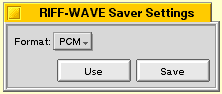

Path:
Tells where sample should be saved to. |
Bitrate:
Selects either 8bit or 16bit output. |
Stereo:
Selects either mono or stereo output. |
Format:
Select output format. Choices are RIFF-WAVE, AudioIFF, IFF-16SV, IFF-8SVX and raw. |
Format settings:
Select settings for RIFF-WAVE or IFF-8SVX format. Choices for RIFF-WAVE are PCM and MSADPCM. PCM is plain raw samples (Pulse Code Modulation) and MSADPCM is Microsoft ADPCM packing algorithm which can pack a file at around 50% with minimal data loss. Choices for IFF-8SVX are PCM and Fibonnaci. |
Pass through output agent:
This lets you listen to what you are saving to disk. When using this option, the sample created will be in the format the other sound output agent deliver the sound in. This means that you can still select bitrate and sample type, but not stereo/mono. |